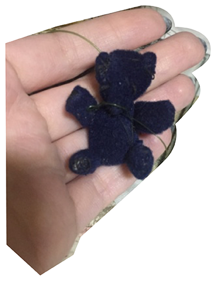

Задания от Лены Королёвой. Истории блокадных игрушек

Я принадлежал Елене Евгеньевне Королевой-Меделяевой. И сделала она меня своими руками в детском садике из обрезков, которые оставались, после того как ребята сделали для солдат тканевые мешочки для табака. Я был мишкой-талисманом. Лена всегда брала меня с собой, и я везде поддерживал её. Куда бы она ни шла и чтобы ей не приходилось пережить, я был рядом, в крепко сжатой ладошке.